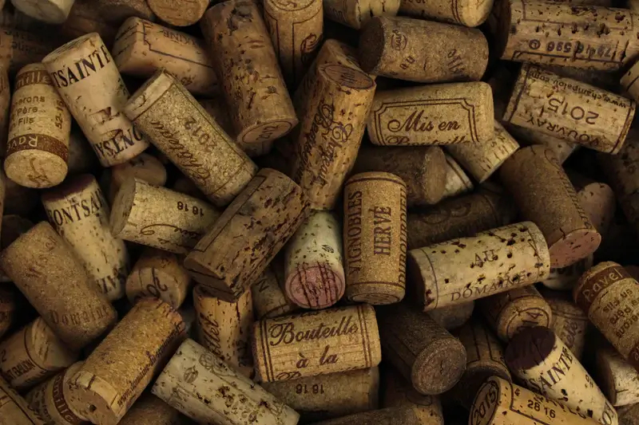

Making your own wine is a fun, easy and simple process. The staff at Creative Grapes want to make your experience unique and stress free. All of our wine kits yield 28-30 (750mL) bottles of wine. The wines produced on site are made with 100% pure grape juice chosen by you to create exactly what you are looking for. Most of our kits take 4 weeks from start to finish. The production of wine includes the juice/juices, all other required ingredients, service charges, corks and taxes.
Customers can bring in their own bottles or we can provide them for you at a nominal fee. A commercial water filter has been installed for all our water sources. All wine equipment is winery grade and professional. The filter we use contains 3 filtering pads to ensure we are clarifying your wine to give it a brilliant finish with a wholesome clean taste. The Electric Fill Jet Bottle Filler has a cascading flow system that can fill a 750mL bottle in 14 seconds. It has a self-priming pump, and a quick load mechanism to make your bottling experience quick and easy.
